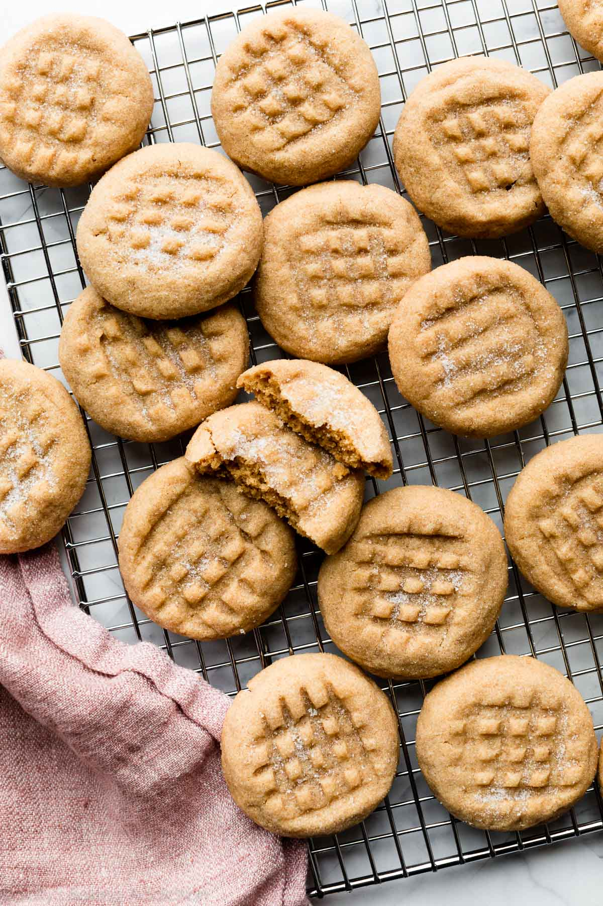

Peanut Butter Cookies

Description
These are the softest, thickest peanut butter cookies! You need just 9 ingredients for the base recipe, and it can be adapted in so many ways to make different variations.
Ingredients
- 1 and 1/3 cups all-purpose flour
- 1/2 teaspoon baking soda
- 1/4 teaspoon salt
- 1/2 cup unsalted butter
- 1/2 cup packed brown sugar
- 1/4 cup granulated sugar, plus 1/2 cup for rolling
- 1 large egg
- 3/4 cup creamy peanut butter
- 1 teaspoon pure vanilla extract
Steps
- Whisk the flour, baking soda, and salt together in a medium bowl. Set aside.
- Using a hand mixer or a stand mixer fitted with paddle attachment, beat the butter for 1 minute on high speed until creamy. Switch to medium-high speed and beat in the brown sugar and 1/4 cup (50g) granulated sugar until completely creamed and smooth, about 2 minutes. Add the egg and beat until combined, about 1 minute. Scrape down the sides and bottom of the bowl as needed. Add the peanut butter and vanilla extract and beat until combined.
- Add the dry ingredients to the wet ingredients and beat on low speed until combined. The dough will be very creamy and soft. Cover and chill the cookie dough in the refrigerator for at least 1–2 hours, and up to 3 days.
- Preheat oven to 350°F (177°C). Line large baking sheets with parchment paper or silicone baking mats.
- Roll & coat the dough: Place remaining 1/2 cup (100g) of sugar into a bowl. Roll chilled cookie dough into balls, about 1 scant Tablespoon (5/8 ounce or 18g) of dough each. Roll each ball in the sugar and arrange on baking sheets about 2 inches apart. Use a fork to make a criss-cross indent on top of each. To prevent the cookies from over-spreading, after indenting the cookies, use your fingers to reshape into a thicker disc (since indenting the balls flattened them out).
- Bake for 11–12 minutes or until the edges appear set and are very lightly browned. The centers will still look very soft.
- Allow cookies to cool on the baking sheet for 5 minutes. After 5 minutes, transfer to a wire rack to cool completely.
- Cookies stay fresh covered at room temperature for up to 1 week.